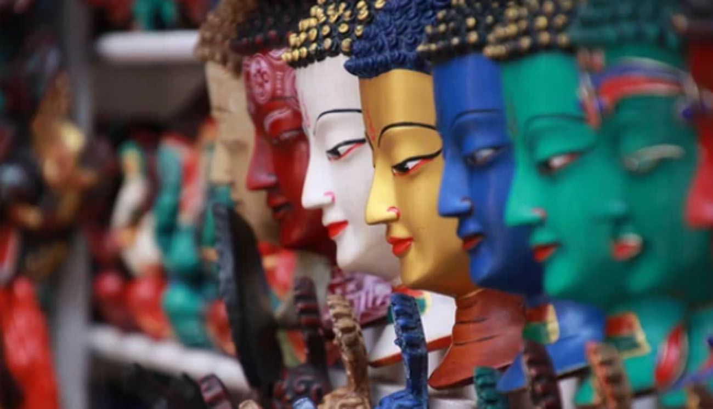
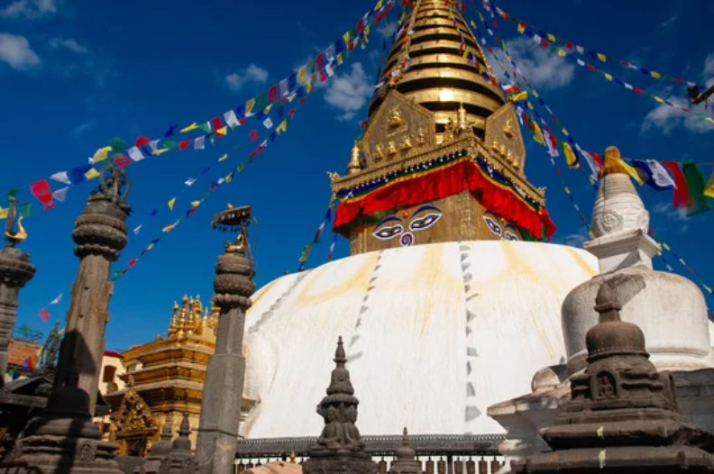
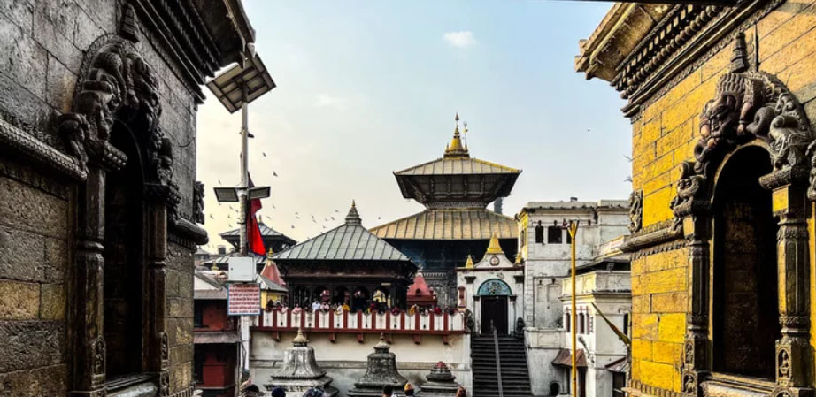
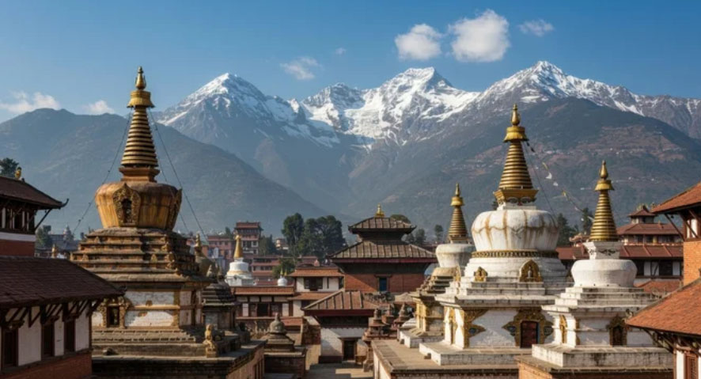
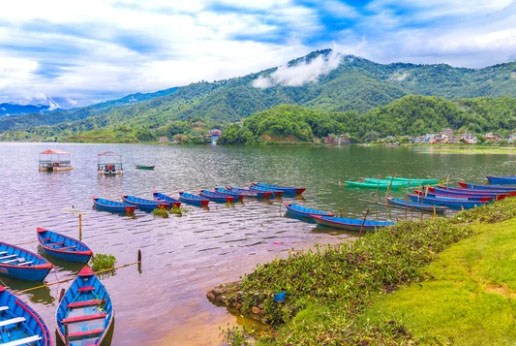
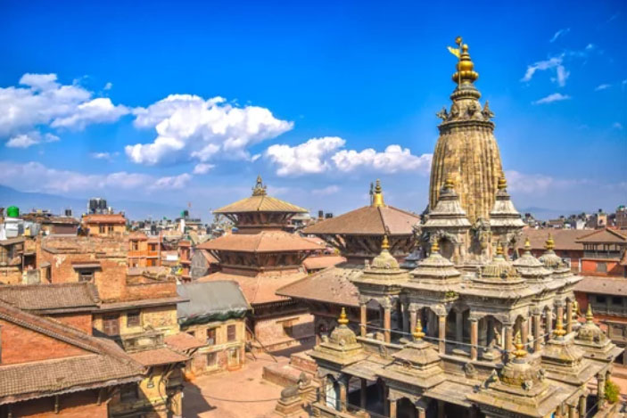
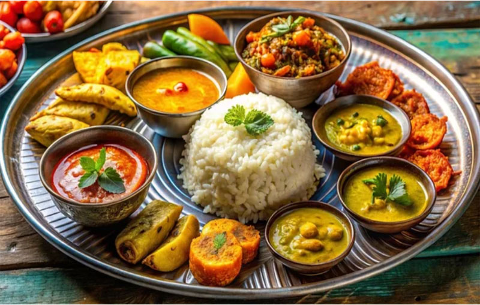
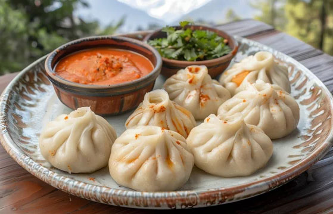

Himalayan soul, endless sky.
Lost among prayer flags and snowlight—Nepal feels like a memory I’ve never lived before.
In Nepal, time doesn’t pass—it settles gently on rooftops, rivers, and ruined stone.
Sacred Peaks & Eternal Valleys
Iconic Landmarks
From the soaring Himalayas of Nepal to its ancient temples and timeless cities, Nepal unfolds as a land where mountains, faith, and myth exist as one living landscape—silent, powerful, and endlessly sacred.
Mount Everest
The roof of the world, where silence touches the sky.

Temple of the Sacred Tooth Relic
Eyes of Buddha watching over an ancient valley.

Pashupatinath Temple
Sacred smoke rising where life meets eternity.
Valleys of Memory & Mountain Cities
Cities of Distinction
From the sacred sprawl of Kathmandu to the serene lakeside calm of Pokhara and the artistic heritage of Lalitpur (Patan), Nepal’s cities unfold as living mosaics where ancient kingdoms, spiritual traditions, and everyday life continue to breathe as one.

Kathmandu
Kathmandu is a city located in central Nepal, at an elevation of approximately 1,337 meters on the southern slopes of the Himalayas, and serves as the capital of the country. The city was established in 723 AD and flourished as the capital of the Newar people. In 1769, the Gorkha king Prithvi Narayan Shah unified Nepal by establishing the Shah dynasty. In 1814, Nepal was defeated in a war against Britain and was forced to cede part of its territory.

Pokhara
Pokhara is Nepal’s second-largest city and a beautiful lakeside resort located at the foot of the Annapurna mountain range. Situated about 200 km from Kathmandu, it is known for its mild climate, stunning views of the Himalayas, boating on Phewa Lake, and adventure activities such as paragliding.

Lalitpur (Patan)
Patan is an ancient city of Nepal, officially known as Lalitpur. As of 2021, it has a population of 299,843, making it the fourth-largest city in the country. Located in the southwestern part of the Kathmandu Valley, it is a metropolitan municipality renowned for its rich cultural heritage.
Himalayan Flavors & Timeless Comfort
From hearty plates of dal bhat to steaming momos and sweet festival treats, Nepal’s cuisine reflects a rich harmony of mountain life, cultural tradition, and simple, soulful nourishment.

Dal Bhat
A set meal of lentil soup and rice, widely regarded as Nepal’s national dish.

Momo
Steamed dumplings filled with meat or vegetables, a beloved street food across Nepal.
Yomari
A traditional steamed rice-flour dumpling filled with sweet molasses or sesame.
ネパールの歴史
Land of Kingdoms & Sacred Traditions
From ancient valley kingdoms to unification under the Shah dynasty, Nepal’s history reflects a quiet strength shaped by faith and the Himalayas.
古代
キラート王国（紀元前7世紀頃～4世紀頃）
カトマンズ盆地に最初の国家が誕生。
リッチャヴィ朝（4世紀～9世紀）
仏教とヒンドゥー教が共存し、文化が発展。
中世
マッラ朝 （12世紀～18世紀）
カトマンズ、パタン、バクタプルの三都に分裂し、芸術と建築が黄金期を迎える。
近世
ゴルカ王国 （18世紀）
プリトビ・ナラヤン・シャハ王によるネパール統一。
ラナ家政権 （19世紀中頃～1951年）
宰相が実権を握り、鎖国政策を実施。
近現代
王国（王政復古・絶対王政） （1951年〜1990年）
1951年:第8代・トリブバン国王（ビレンドラ国王の祖父）が、独裁に不満を持つ民衆やインド政府と協力して、ラナ家を打倒しました。
1960年:マヘンドラ国王（ビレンドラの父）が政党を禁止し、国王がすべてを決める「パンチャーヤト制」を開始。
1972年:ビレンドラ国王が即位。 最初は父の「絶対王政」を継承しました。
立憲君主制 （1990年）
1990年:大規模な民主化運動（ジャナ・アンドラン）が起き、ビレンドラ国王が屈服。新憲法を制定し、国王の権限を制限。 ここで初めて本格的な「立憲君主制」になりました。
内戦と王族殺害事件 （1990年〜2008年）
2001年: 王族殺害事件が発生。ビレンドラ国王が亡くなり、弟のギャネンドラが即位。
2005年: ギャネンドラ国王が内閣を解散し、全権を掌握（絶対君主制への逆行）。再び独裁（親政）を強行したため、国民の怒りを買いました。
2006年: 国民による大規模な民主化運動（ロクタントラ・アンドラン）が勃発。
王政廃止 （2008年）
共産党毛派の闘争を経て、連邦民主共和制へ移行。
2008年: 制憲議会で王制廃止が決定。ネパールは「王国」から「連邦民主共和国」へ。
現代
ネパール連邦民主共和国 （2008年～）
連邦民主共和制のもと、観光業や経済の発展を目指す。ネパールは「王国」から「共和国」へ。
2008年5月28日：制憲議会の初会合で、240年続いた王制の廃止と連邦民主共和制への移行が宣言されました。
2008年6月：ギャネンドラ国王が退位し、王宮を去りました。
ネパール （2020年～）
2020年の正式国名変更 K.P.シャルマ・オリ内閣は正式国名を「ネパール連邦民主共和国」から政体名を含まない「ネパール」とすることを閣議決定
ネパールの歴史は、地理的な要因や宗教的な影響を受けながら、多様な文化と政治体制が展開してきました。
王族殺害事件（2001年）
「内戦と王政廃止」のプロセスの中で、当時のビレンドラ国王一家が殺害された事件は、王制崩壊を決定づけた現代史の大きな転換点です。 2001年6月1日にネパール王国の首都カトマンズ、ナラヤンヒティ王宮で発生した事件。公式発表によれば、ディペンドラ王太子が夕食会中に銃を乱射して家族を殺害し、その直後に自らも銃で自殺を図ったとされています。現場名称を取ったナラヤンヒティ王宮事件とも呼ばれ、 この事件には現在も多くの謎が残されており、国民の間では陰謀論が根強く存在します。
王室への敬愛の喪失: 「神の化身」とまで慕われたビレンドラ国王一家が亡くなり、唯一生き残って即位した弟のギャネンドラ国王に対して、国民の不信感や陰謀論が渦巻くきっかけとなりました。
王政崩壊の加速: ギャネンドラ国王が強権政治（親政）を敷いたことで国民の反発を招き、それまで対立していた政党と毛沢東派（マオイスト）が手を組む流れを作り、最終的な王制廃止へとつながりました。
事件の背景
1. 「神の化身」としての王室
当時のネパールにおいて、国王はヒンドゥー教の主神ヴィシュヌ神の化身と信じられていました。そのため、王族の結婚は単なる個人の自由ではなく、国家の安定や神聖さを保つための「儀式」のような側面が強かったのです。
2. 凄まじい階級（カースト）意識
王太子が結婚を望んだ女性（デブヤニ・ラナ）も名家の出身でしたが、王妃アイシュワリヤ（王太子の母）は彼女の家系を格下と見なし、激しく反対しました。「血統」を何よりも重んじる古い価値観が、個人の愛よりも優先されてしまった悲劇と言えます。
3. 「絶対君主」の名残
当時、ネパールはすでに立憲君主制に移行しつつありましたが、実際には国王が強い権限を持っていました。王宮内はまさに「治外法権」のような場所で、民主的な対話よりも、王の家長としての決定が絶対視される閉鎖的な空間だったのです。
結局、この「民主主義とは程遠い」王室のドロドロした内情が白日の下にさらされたことで、国民の心は一気に王室から離れてしまいました。皮肉なことに、この非民主的な事件が引き金となって、ネパールは王制廃止（共和制への移行）という究極の民主化へ突き進むことになったわけです。
「ジャナ・アンドラン（民衆運動）」と「共産党毛沢東主義派（マオイスト）の武装闘争」
「ジャナ・アンドラン（民衆運動）」と「共産党毛沢東主義派（マオイスト）の武装闘争」は、もともとは別の動きでしたが、最終的に合流して王制を倒しました。
1. ジャナ・アンドラン（1990年）
主体: ネパール会議派や左派政党連合による市民デモ。
目的: 絶対王政を終わらせ、複数政党制を導入すること。
結果: ビレンドラ国王が妥協し、立憲君主制が始まりました。
※この時、毛派はまだ「武装闘争」を始めていません。
2. マオイストの武装闘争（1996年〜2006年）
主体: ネパール共産党毛沢東主義派（マオイスト）。
目的: 王制そのものの廃止と、共産共和国の樹立。
内容: 農村部を中心に「人民戦争」と呼ばれるゲリラ戦を展開。政府軍と激しく衝突し、多くの犠牲者が出ました。
3.ロクタントラ・アンドラン(2006年）)
主体: 議会派の政党と、マオイストが手を組んだ大規模なデモ。
背景: 2001年の事件後に即位したギャネンドラ国王が独裁を強めたため、それまで敵対していた「議会派政党」と「マオイスト」が、「王制を倒す」という一点で協力（12カ条の合意）しました。
結果: 国王が屈服。同年、内戦が終結し、2008年の王制廃止（共和制移行）へとつながりました。